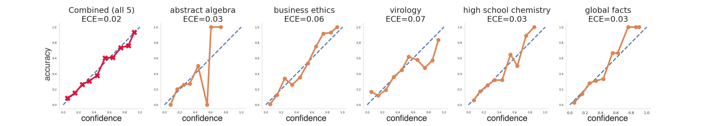
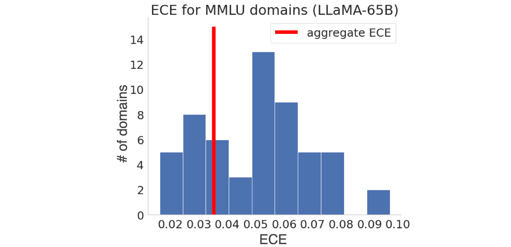
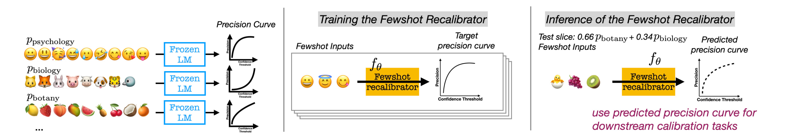

Few-Shot Recalibration of Language Models
[Link]
Motivation
While LMs may appear well-calibrated over broad distributions, this often hides significant miscalibration within narrower slices (e.g., systemic overconfidence in math can balance out systemic under-confidence in history, yielding perfect calibration in aggregate).
This miscalibration problem is hidden for the combined distribution because overconfidence in some domains cancels out underconfidence in others.


Methodology
Few-Shot Slice-Specific Recalibration
- Train a separate recalibration model that takes a few unlabeled examples as input and outputs a curve that maps the LM’s confidence scores to slice-specific estimates of precision.
Parametrizing f: Predicting Precision Curves vs. Calibration Curves
- Define f to be the precision curve, which maps confidence thresholds to precision scores.
- This flexibility of the precision curve allows us to accomplish a variety of downstream goals such as reducing calibration error, finding optimal confidence thresholds for desired precision.
- Choose precision curves as our calibrator’s prediction target
Binning Steps for Calibration Curve
- The binning design, where scores can either be grouped into equally-spaced bins with equal interval ranges, or equally-sized bins with an equal number of examples per bin.
- The number of bins such that scores can be grouped into a large number of bins each containing a small number of examples, or a small number of bins each containing many examples.
Synthetic Data Construction
Training the Few-Shot Recalibrator
Predicting a higher precision score than the ground-truth means the recalibrator believes the model correctly answers more questions than it actually can, and the confidence threshold does not trigger abstention when it should.

Experiments
Models
- LLaMA-65B and PaLM2-Large.
Datasets
Settings
- Achieving Target Precision.
- Reducing Calibration Error.
Future Work
Future work should study few-shot recalibration for natural language generation tasks, to steer model generated text to be more or less conservative, as well as apply this approach to a broader set of models, including instruction-tuned and RLHF models, and multimodal settings.